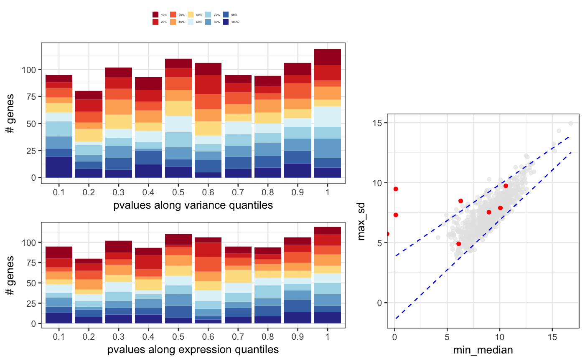

degQC.RdThis function joins the output of degMean,
degVar and degMV in a
single plot. See these functions for further information.
degQC(counts, groups, object = NULL, pvalue = NULL)
| counts | Matrix with counts for each samples and each gene. |
|---|---|
| groups | Character vector with group name for each sample in the same order than counts column names. |
| object | DEGSet oobject. |
| pvalue | pvalues of DEG analysis. |
ggplot2 object
data(humanGender) library(DESeq2) idx <- c(1:10, 75:85) dds <- DESeqDataSetFromMatrix(assays(humanGender)[[1]][1:1000, idx], colData(humanGender)[idx,], design=~group) dds <- DESeq(dds)#>#>#>#>#>#>#> #> #>#>#>res <- results(dds) degQC(counts(dds, normalized=TRUE), colData(dds)[["group"]], pvalue = res[["pvalue"]])